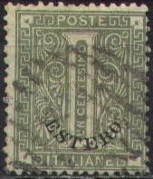
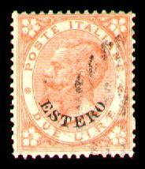
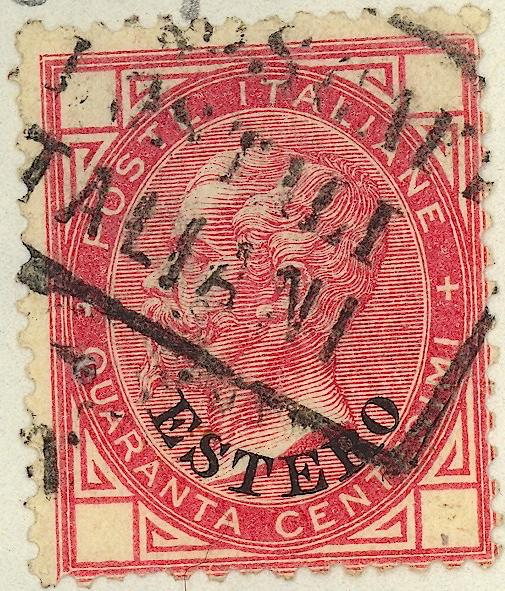
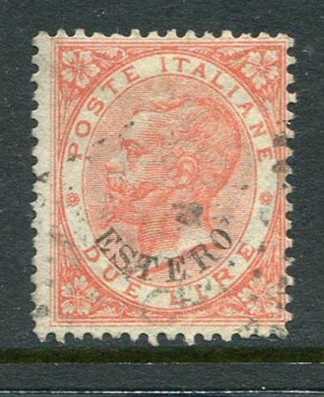
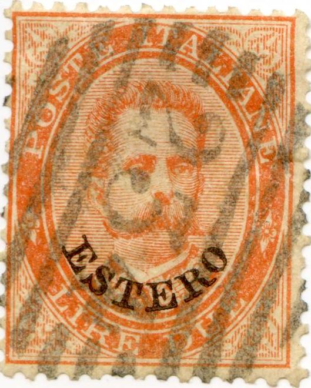

Return To Catalogue - Italian post offices in Turkey, Albania etc. - Italy
Note: on my website many of the
pictures can not be seen! They are of course present in the
catalogue;
contact me if you want to purchase the catalogue.
Note: The stamps of Italy, slightly changed and overprinted with "ESTERO" were used in Buenos Aires (Argentine), Montevideo (Uruguay), Erithrea, Alexandria (Egypt), Tunesia, Libya and Turkey. The use of the "ESTERO" stamps was stopped at the end of 1889. Some stamps exist cancelled to order, especially with bar cancels "3364" and "3862", or also with bar cancels without any number.




1 c olive (number) 2 c red (number) 5 c olive (Victor Emanuel II) 10 c orange (Victor Emanuel II) 10 c blue (Victor Emanuel II, 1878) 20 c blue (Victor Emanuel II) 20 c orange (Victor Emanuel II, 1878) 30 c brown (Victor Emanuel II) 40 c red (Victor Emanuel II) 60 c violet (Victor Emanuel II) 2 L orange (Victor Emanuel II)
Value of the stamps |
|||
vc = very common c = common * = not so common ** = uncommon |
*** = very uncommon R = rare RR = very rare RRR = extremely rare |
||
| Value | Unused | Used | Remarks |
| 1 c | * | *** | |
| 2 c | * | *** | |
| 5 c | R | *** | |
| 10 c orange | RR | *** | |
| 10 c blue | RR | R | |
| 20 c blue | RR | RR | |
| 20 c orange | RR | R | |
| 30 c | ** | *** | |
| 40 c | ** | *** | |
| 60 c | ** | R | |
| 2 L | RR | RR | |
Special number cancels, examples 234 = Alexandria (Allesandria d'Egitto), 235 = Tunis (Tunisi), 3051 = Tripoli di Barberia, 3336 = La Goulette (Tunesia) and 3364 = Suez.

Paquebot cancel: "PEROSCAFI POSTALI ITALIANI" in a
rectangle
Forgeries exist on normal stamps of Italy (without the ornaments cut out), example of such forgeries:
 
(Forged overprints on normal stamps of Italy)
The forger Mirza Hadi obtained a large quantity of remainders of the 1 c, 2 c and 60 c stamps of this issue (somewhere before 1912). After applying a forged '234' cancel he sold them to collectors (source: 'Philatelic Forgers, their Lives and Works' by V.E. Tyler).

Forgery made by Sperati of the 20 c value. There is a white spot
in lower part of the upper right rectangle. Furthermore, there is
a satellite dot behind the dot under the "C" of
"FCO".

Forgery made from an ordinary Italy stamp, but with a straight
"ESTERO" overprint.
5 c green 10 c red 20 c orange 25 c blue 50 c violet 2 L orange
Value of the stamps |
|||
vc = very common c = common * = not so common ** = uncommon |
*** = very uncommon R = rare RR = very rare RRR = extremely rare |
||
| Value | Unused | Used | Remarks |
| 5 c | *** | *** | |
| 10 c | ** | *** | |
| 20 c | ** | ** | |
| 25 c | ** | *** | |
| 50 c | ** | RR | |
| 2 L | *** | - | No 'genuinly' used stamps are known |

The 2 L value does exist with cancel. Here a '235' cancel (image
obtained thanks to Frederic Calves).
The Estero stamps were no longer used after 1 January 1890.
Stamps - Briefmarken - Timbres-Poste - Postzegels - Francobolli - Estampillas


{kind=link}
{kind=link}
{kind=link}
{kind=link}